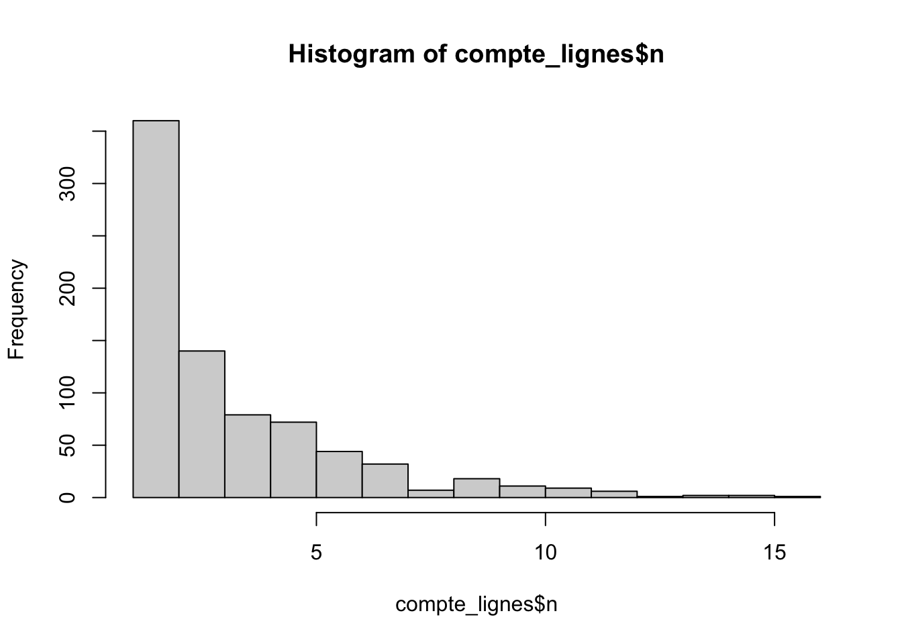

id n
Min. : 1.0 Min. : 1.000
1st Qu.:196.8 1st Qu.: 1.000
Median :392.5 Median : 3.000
Mean :392.5 Mean : 3.384
3rd Qu.:588.2 3rd Qu.: 5.000
Max. :784.0 Max. :16.000
hist(compte_lignes$n)

Evolution moyenne approchée par une régression
p <- (ggplot(ams)+geom_line(aes(x = delai_consult_vis0, y = SCHRAG_TOT, group = id), color="grey30", alpha =0.8)+stat_smooth(aes(x = delai_consult_vis0, y = SCHRAG_TOT), method ="loess", linewidth =0.75)+theme_bw()+xlab("Temps depuis l'entrée dans l'étude (en dizaines d'années)")+ylab("qol"))p
Linear mixed-effects model fit by maximum likelihood
Data: ams
AIC BIC logLik
10646.37 10666.6 -5319.187
Random effects:
Formula: ~1 | id
(Intercept) Residual
StdDev: 24.39016 16.60237
Fixed effects: SCHRAG_TOT ~ delai_consult_vis0
Value Std.Error DF t-value p-value
(Intercept) 75.41368 1.2944907 651 58.25741 0
delai_consult_vis0 6.04952 0.3128314 651 19.33796 0
Correlation:
(Intr)
delai_consult_vis0 -0.32
Standardized Within-Group Residuals:
Min Q1 Med Q3 Max
-3.232779872 -0.492680513 0.003173265 0.501117984 3.149160471
Number of Observations: 1160
Number of Groups: 508
##revient au meme que avec le jeu de données sans NAm1NA <-lme(fixed= SCHRAG_TOT ~ delai_consult_vis0, random =~1| id, data= amsNA, method='ML')summary(m1NA)
Linear mixed-effects model fit by maximum likelihood
Data: amsNA
AIC BIC logLik
10214.15 10234.21 -5103.075
Random effects:
Formula: ~1 | id
(Intercept) Residual
StdDev: 24.43105 16.36695
Fixed effects: SCHRAG_TOT ~ delai_consult_vis0
Value Std.Error DF t-value p-value
(Intercept) 75.07320 1.3087444 616 57.36277 0
delai_consult_vis0 6.11954 0.3242609 616 18.87228 0
Correlation:
(Intr)
delai_consult_vis0 -0.321
Standardized Within-Group Residuals:
Min Q1 Med Q3 Max
-3.29471898 -0.50270422 0.01311079 0.49280533 3.21484055
Number of Observations: 1114
Number of Groups: 497
##SCHRAG seul, pente et intercept aleatoirem1pente_int <-lme(fixed= SCHRAG_TOT ~ delai_consult_vis0, random =~ delai_consult_vis0 | id, data= ams, method='ML', na.action=na.omit)summary(m1pente_int)
Linear mixed-effects model fit by maximum likelihood
Data: ams
AIC BIC logLik
10606.15 10636.49 -5297.076
Random effects:
Formula: ~delai_consult_vis0 | id
Structure: General positive-definite, Log-Cholesky parametrization
StdDev Corr
(Intercept) 26.166619 (Intr)
delai_consult_vis0 4.464764 -0.302
Residual 14.582889
Fixed effects: SCHRAG_TOT ~ delai_consult_vis0
Value Std.Error DF t-value p-value
(Intercept) 74.18300 1.3611247 651 54.50125 0
delai_consult_vis0 7.38313 0.4843025 651 15.24488 0
Correlation:
(Intr)
delai_consult_vis0 -0.414
Standardized Within-Group Residuals:
Min Q1 Med Q3 Max
-2.92042887 -0.46904064 -0.01705109 0.47417192 3.28173875
Number of Observations: 1160
Number of Groups: 508
Linear mixed-effects model fit by maximum likelihood
Data: ams
AIC BIC logLik
18421.53 18444.55 -9206.764
Random effects:
Formula: ~1 | id
(Intercept) Residual
StdDev: 15.23173 8.896836
Fixed effects: UMTOT ~ delai_consult_vis0
Value Std.Error DF t-value p-value
(Intercept) 49.46157 0.6101952 1565 81.05861 0
delai_consult_vis0 6.25868 0.1222399 1565 51.20000 0
Correlation:
(Intr)
delai_consult_vis0 -0.212
Standardized Within-Group Residuals:
Min Q1 Med Q3 Max
-3.533181515 -0.515492150 0.002318342 0.535759577 3.005225911
Number of Observations: 2332
Number of Groups: 766
##UMTOT seul, pente et intercept aleatoirem2pente_int <-lme(fixed= UMTOT ~delai_consult_vis0, random =~ delai_consult_vis0 | id, data= ams, method='ML', na.action=na.omit)summary(m2pente_int)
Linear mixed-effects model fit by maximum likelihood
Data: ams
AIC BIC logLik
17576.52 17611.05 -8782.262
Random effects:
Formula: ~delai_consult_vis0 | id
Structure: General positive-definite, Log-Cholesky parametrization
StdDev Corr
(Intercept) 15.371389 (Intr)
delai_consult_vis0 4.591619 0.06
Residual 5.536477
Fixed effects: UMTOT ~ delai_consult_vis0
Value Std.Error DF t-value p-value
(Intercept) 47.52189 0.5843350 1565 81.32646 0
delai_consult_vis0 9.96469 0.2620747 1565 38.02234 0
Correlation:
(Intr)
delai_consult_vis0 -0.067
Standardized Within-Group Residuals:
Min Q1 Med Q3 Max
-3.769756896 -0.446443508 0.002700109 0.445480365 3.267594008
Number of Observations: 2332
Number of Groups: 766